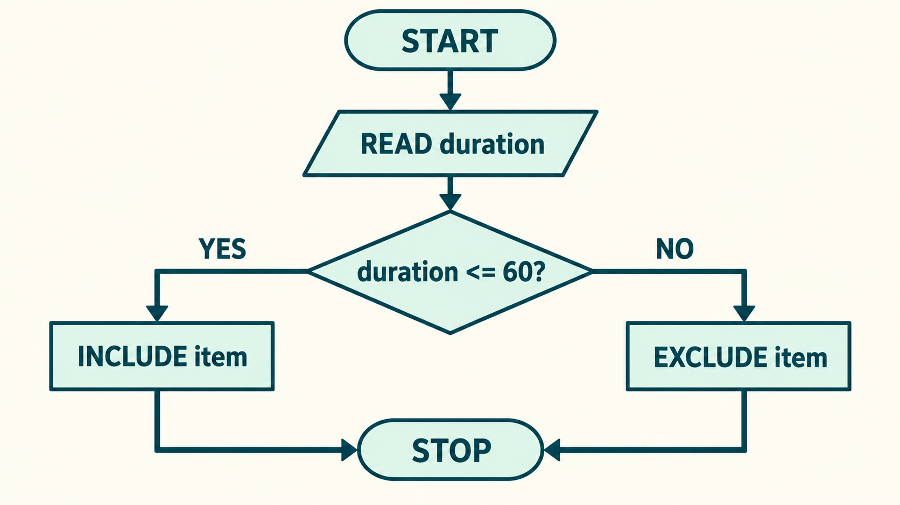

3.2A–D · pp. 81–85; chapter connections pp. 90–91
A feed is a sequence of decisions
Predict one input and one output of the school feed.
AI conceptual illustration · fictional scene, not case evidence
IB Digital Society SL · Sprint 3 · teaching revision 5 · visual teaching edition
3.2A–D · pp. 81–85; chapter connections pp. 90–91
Understand: mechanism and distinctions · Apply: explain from evidence · Remember: precise vocabulary
3.2A–D · pp. 81–85; chapter connections pp. 90–91
Predict one input and one output of the school feed.
AI conceptual illustration · fictional scene, not case evidence
Individual saved practice · do not enter names · 1–3 minutes unless stated otherwise
Compare with the transcript or your partner’s reasoning. Retain the first response and add a correction. A useful answer names an intermediate operation or distinction, not only an effect.
Imagine a school media feed containing a concert, a science demonstration and a sports update. The phone shows an ordered list, but somebody has decided which information to collect and which outcomes to favour. We will begin with very small rules that we can follow ourselves. Later we will examine recommendation systems and the consequences for people. You do not need programming experience. By the end, you should be able to trace a rule, explain its result and identify a decision hidden inside it.
Bomfim et al., Digital Society for the IB Diploma, Hodder, 2022. Printed pages cited per slide. Original paraphrase. Textbook connection: pp. 81.
Understand · 2 · Textbook pp. 81–82
Input: B4, B1, B3, B2
Compare each record with target B3
First match → return B3 and stop
A concrete procedure has defined information, a precise operation and a stopping condition.
A precise sequence of instructions for a task
Bomfim et al., Digital Society for the IB Diploma, Hodder, 2022. Printed pages cited per slide. Original paraphrase. Textbook connection: pp. 81–82.
An algorithm is a procedure. Code is one way to implement that procedure. A rule for finding a book can be written in ordinary language and followed by a person, or expressed in a programming language and run by a computer. The input and output must be clear. An algorithm can have no external input, but it still produces a defined result. When explaining a system, naming an algorithm is only a start. State what information enters, what the procedure does and what comes out.
Bomfim et al., Digital Society for the IB Diploma, Hodder, 2022. Printed pages cited per slide. Original paraphrase. Textbook connection: pp. 81–82.
Apply · 3 · Textbook pp. 81–82
Ambiguous instruction
Show the best item.
Followable rule
Sort by completion; break ties by item ID; stop at list end.
Unambiguous · finite · feasible · independent of a particular coding language
Unambiguous: each instruction has one clear meaning
Bomfim et al., Digital Society for the IB Diploma, Hodder, 2022. Printed pages cited per slide. Original paraphrase. Textbook connection: pp. 81–82.
Individual saved practice · do not enter names · 1–3 minutes unless stated otherwise
Compare with the transcript or your partner’s reasoning. Retain the first response and add a correction. A useful answer names an intermediate operation or distinction, not only an effect.
Compare “show the best video” with “sort by completion rate, then by item ID when values tie.” The first instruction leaves best undefined. The second tells us exactly how to order the available data. A procedure also needs a stopping condition, such as reaching the end of a finite list. Feasible means that its demands fit the resources available. The textbook also describes independence from a particular programming language. These characteristics help us check whether a rule can actually be followed before judging whether its purpose is desirable.
Bomfim et al., Digital Society for the IB Diploma, Hodder, 2022. Printed pages cited per slide. Original paraphrase. Textbook connection: pp. 81–82.
Apply · 4 · Textbook pp. 82
| Step | Instruction | total |
|---|---|---|
| Start | Set total to 0 | 0 |
| Item A | Add 1 | 1 |
| Item B | Add 1 | 2 |
A variable is a named place for a value
Bomfim et al., Digital Society for the IB Diploma, Hodder, 2022. Printed pages cited per slide. Original paraphrase. Textbook connection: pp. 82.
Individual practice check · no marks
Use a variable called total to count available school videos. At the start total equals zero. After checking the first item, it may become one. A trace table shows the value after each instruction, so we can find the step where an error happened. A variable does not have to change every time it is used. It is called a variable because its value can vary. A literal value, such as the threshold 10, stays fixed in this example. Always identify what the variable represents and its unit.
Bomfim et al., Digital Society for the IB Diploma, Hodder, 2022. Printed pages cited per slide. Original paraphrase. Textbook connection: pp. 82.
Apply · 5 · Textbook pp. 83
60 meets the boundary
75 fails the test
Missing value → separate rule; missing ≠ 0
IF a test is true, follow one branch
Bomfim et al., Digital Society for the IB Diploma, Hodder, 2022. Printed pages cited per slide. Original paraphrase. Textbook connection: pp. 83.
Individual saved practice · do not enter names · 1–3 minutes unless stated otherwise
Compare with the transcript or your partner’s reasoning. Retain the first response and add a correction. A useful answer names an intermediate operation or distinction, not only an effect.
Suppose we include videos lasting at most 60 seconds. An item of exactly 60 seconds passes the condition duration less than or equal to 60. It would fail a condition duration less than 60. This tiny distinction changes an outcome for the creator. A conditional does not guess what to do. It evaluates a stated test. A missing duration needs a separate rule because missing is not the same as zero. The person designing that rule decides whether to exclude the item, request a value or treat the uncertainty in another way.
Bomfim et al., Digital Society for the IB Diploma, Hodder, 2022. Printed pages cited per slide. Original paraphrase. Textbook connection: pp. 83.
Apply · 6 · Textbook pp. 83
Worked trace · synthetic durations
Start count = 0 · Test duration ≤ 60 · Advance even when false
Predict the final count before stepping.
30 → count 1; 75 → count 1; 60 → count 2; end → stop.
Watch the counter and current item. Explain why the second item does not add one.
FOR each item, apply the same test
Bomfim et al., Digital Society for the IB Diploma, Hodder, 2022. Printed pages cited per slide. Original paraphrase. Textbook connection: pp. 83.
Individual saved practice · do not enter names · 1–3 minutes unless stated otherwise
Compare with the transcript or your partner’s reasoning. Retain the first response and add a correction. A useful answer names an intermediate operation or distinction, not only an effect.
A loop lets a procedure apply instructions to several records. In a for-each loop, the next record changes each time. If the procedure never moves to the next record, it may fail to terminate. A while loop repeats while a condition remains true, so its instructions must eventually change the condition or provide another exit. On paper, place your finger on the current record and move it only when the loop advances. Record a variable after each pass. This keeps the trace tied to the actual sequence.
Bomfim et al., Digital Society for the IB Diploma, Hodder, 2022. Printed pages cited per slide. Original paraphrase. Textbook connection: pp. 83.
Apply · 7 · Textbook pp. 83

Natural language explains a procedure in words
Bomfim et al., Digital Society for the IB Diploma, Hodder, 2022. Printed pages cited per slide. Original paraphrase. Textbook connection: pp. 83.
Individual saved practice · do not enter names · 1–3 minutes unless stated otherwise
Compare with the transcript or your partner’s reasoning. Retain the first response and add a correction. A useful answer names an intermediate operation or distinction, not only an effect.
Read the worked flowchart from top to bottom. The oval starts or ends the procedure, the parallelogram reads input, the diamond tests a condition and the rectangles perform actions. Arrows show sequence. Here a known numeric duration of 60 follows YES to INCLUDE, then STOP. A value of 75 follows NO to EXCLUDE, then STOP. Each representation should describe the same decisions. Natural language is accessible to people who do not code, but vague wording can hide ambiguity. A flowchart makes a branch or return to a previous test visible. Code allows a computer to execute the procedure, but syntax depends on the programming language. Pseudocode is a planning notation that resembles code without requiring one language. When translating, preserve the condition, order and stopping rule. A prettier representation is not an improvement if it changes the procedure.
Bomfim et al., Digital Society for the IB Diploma, Hodder, 2022. Printed pages cited per slide. Original paraphrase. Textbook connection: pp. 83.
Apply · 8 · Textbook pp. 83–84
Procedure
If a video is at most 60 seconds, say Include; otherwise say Exclude.
Pseudocode
IF seconds ≤ 60
THEN say Include
ELSE say Exclude
Python code
if seconds <= 60:
print("Include")
else:
print("Exclude")The code fragment assumes a numeric seconds value. The same decision is expressed in words, a planning notation and a specific language.
Algorithm: the underlying procedure
Bomfim et al., Digital Society for the IB Diploma, Hodder, 2022. Printed pages cited per slide. Original paraphrase. Textbook connection: pp. 83–84.
Individual practice check · no marks
The same algorithm can be implemented in several programming languages. Writing Python does not automatically make the procedure correct. Developers normally specify the task, represent the procedure, implement it and test its behaviour on ordinary and unusual inputs. Boundary and missing values matter. In Digital Society, you need enough precision to explain a mechanism. You are not required to turn every case response into a software tutorial. When a code example appears, read it line by line and connect the values to the people or objects they represent.
Bomfim et al., Digital Society for the IB Diploma, Hodder, 2022. Printed pages cited per slide. Original paraphrase. Textbook connection: pp. 83–84.
Apply · 9 · Textbook pp. 84
| Comparison | Record | Match B3? |
|---|---|---|
| 1 | B4 | No |
| 2 | B1 | No |
| 3 | B3 | Yes: stop |
Linear search checks records one at a time
Bomfim et al., Digital Society for the IB Diploma, Hodder, 2022. Printed pages cited per slide. Original paraphrase. Textbook connection: pp. 84.
Individual saved practice · do not enter names · 1–3 minutes unless stated otherwise
Compare with the transcript or your partner’s reasoning. Retain the first response and add a correction. A useful answer names an intermediate operation or distinction, not only an effect.
Take the list B4, B1, B3, B2 and search for B3. Compare B4 with the target, then B1, then B3. The target appears after three comparisons. Searching for B9 requires all four comparisons and returns no match. This is linear search. Its work grows with the number of records inspected. Other searches use different structures or assumptions. Do not call an algorithm efficient without naming what work you are counting and what input conditions you have assumed.
Bomfim et al., Digital Society for the IB Diploma, Hodder, 2022. Printed pages cited per slide. Original paraphrase. Textbook connection: pp. 84.
Apply · 10 · Textbook pp. 84
| State | Values | Action |
|---|---|---|
| Start | 3, 1, 2 | Compare first pair |
| After swap | 1, 3, 2 | Compare next pair |
| After swap | 1, 2, 3 | End this pass |
Sort arranges existing items by a stated key
Bomfim et al., Digital Society for the IB Diploma, Hodder, 2022. Printed pages cited per slide. Original paraphrase. Textbook connection: pp. 84. Optional demonstration: Read primary source
Individual saved practice · do not enter names · 1–3 minutes unless stated otherwise
Compare with the transcript or your partner’s reasoning. Retain the first response and add a correction. A useful answer names an intermediate operation or distinction, not only an effect.
Start with 3, 1, 2 and sort in ascending order. Compare 3 and 1, then swap them because 3 is larger. The list becomes 1, 3, 2. Compare 3 and 2 and swap again. The list becomes 1, 2, 3. In longer lists, another pass may still be needed. A stop rule can end the process after a complete pass with no swaps. Sorting does not make the data more accurate. It orders the values you supplied, including errors. State how ties and missing values are handled. Optional verified visual demonstration: Bubble Sort, Doug Lloyd / Harvard CS50, original 2017 short linked from the Spring 2026 course. Watch 1:41–3:08 for one adjacent-comparison pass; stop before the next pass. First predict whether swapping 5 and 2 finishes sorting. Observe which pair is compared and whether the swap counter changes. After the clip, explain why a pass can end with an unsorted prefix. The official player and English captions loaded and playback was checked on 11 October 2026; school filtering is not tested. Static fallback: the three-row worked trace on this slide, followed by the 4,2,3,1 practice list.
Bomfim et al., Digital Society for the IB Diploma, Hodder, 2022. Printed pages cited per slide. Original paraphrase. Textbook connection: pp. 84. Optional demonstration: https://cs50.harvard.edu/college/2026/spring/shorts/bubble_sort/
Understand · 11 · Textbook pp. 84
| Task | Output |
|---|---|
| Filter loans >= 10 | A and C |
| Count matches | 2 records |
| Sort all, descending loans | C, A, B |
Filter: keep records that meet a condition
Bomfim et al., Digital Society for the IB Diploma, Hodder, 2022. Printed pages cited per slide. Original paraphrase. Textbook connection: pp. 84.
Use three library records: A has 10 loans, B has 4 and C has 12. Filtering for at least 10 loans keeps A and C. Counting the matching records gives two. Sorting all records by loans gives C, A, B. These operations answer different questions. A filter can determine whose item is eligible before a ranking rule is applied. A count can become an input to a later decision. Explain the pipeline rather than using search, sort and filter as interchangeable terms.
Bomfim et al., Digital Society for the IB Diploma, Hodder, 2022. Printed pages cited per slide. Original paraphrase. Textbook connection: pp. 84.
Apply · 12 · Textbook pp. 81, 84–86
Name the measure before saying an algorithm is better.
Possible measures: comparisons, time or memory
Bomfim et al., Digital Society for the IB Diploma, Hodder, 2022. Printed pages cited per slide. Original paraphrase. Textbook connection: pp. 81, 84–86.
Individual practice check · no marks
Efficiency concerns resources used to perform a task. A linear search can be compared by its number of comparisons on a particular list. A different search may need sorted input, which itself takes work. Timing a program also depends on hardware and implementation. A procedure can be extremely fast while excluding a group unfairly. It can be transparent while using an unsuitable objective. In a judgement, identify the relevant efficiency measure and the social criterion instead of collapsing both into “better”.
Bomfim et al., Digital Society for the IB Diploma, Hodder, 2022. Printed pages cited per slide. Original paraphrase. Textbook connection: pp. 81, 84–86.
Apply · 13 · Textbook pp. 85
| Item | Completion c | New topic m |
|---|---|---|
| M1 | 0.8 | 1 |
| M2 | 0.9 | 0 |
| M3 | 0.5 | 0 |
A ranking score combines chosen signals
Bomfim et al., Digital Society for the IB Diploma, Hodder, 2022. Printed pages cited per slide. Original paraphrase. Textbook connection: pp. 85.
Individual saved practice · do not enter names · 1–3 minutes unless stated otherwise
Compare with the transcript or your partner’s reasoning. Retain the first response and add a correction. A useful answer names an intermediate operation or distinction, not only an effect.
Our invented museum feed has three items. Each has a completion rate c between zero and one and a new-topic flag m, either zero or one. We can favour familiarity or discovery by changing weights. The score is a classroom model, not an actual platform algorithm. The designer has chosen the signals, scale and goal. If two scores tie, item ID will decide their order here. That tie-break is also a design choice. A ranking is an output of these choices, not a direct measurement of quality.
Bomfim et al., Digital Society for the IB Diploma, Hodder, 2022. Printed pages cited per slide. Original paraphrase. Textbook connection: pp. 85.
Apply · 14 · Textbook pp. 85
Same inputs
M1: c=.8, m=1
M2: c=.9, m=0
M3: c=.5, m=0
Rule A · discovery
c + 2mThe new-topic flag contributes up to 2.
Rule B · completion
3c + .2mCompletion contributes up to 3.
Predict first. Calculate all three scores. The next slide reveals the ranking.
Rule A: score = c + 2m
Bomfim et al., Digital Society for the IB Diploma, Hodder, 2022. Printed pages cited per slide. Original paraphrase. Textbook connection: pp. 85.
Individual saved practice · do not enter names · 1–3 minutes unless stated otherwise
Compare with the transcript or your partner’s reasoning. Retain the first response and add a correction. A useful answer names an intermediate operation or distinction, not only an effect.
Before calculating, predict which rule is more likely to lift the new-topic item. Rule A gives the flag a contribution of two, while the completion contribution can be at most one. Rule B gives completion up to three, while the flag contributes only point two. Those scales matter. Copy the inputs from the previous slide and calculate all three scores for each rule. Write your prediction before moving on. If your prediction changes, identify which term in the calculation caused it.
Bomfim et al., Digital Society for the IB Diploma, Hodder, 2022. Printed pages cited per slide. Original paraphrase. Textbook connection: pp. 85.
Apply · 15 · Textbook pp. 85
Rule A ranks M1 first
Bomfim et al., Digital Society for the IB Diploma, Hodder, 2022. Printed pages cited per slide. Original paraphrase. Textbook connection: pp. 85.
Individual saved practice · do not enter names · 1–3 minutes unless stated otherwise
Compare with the transcript or your partner’s reasoning. Retain the first response and add a correction. A useful answer names an intermediate operation or distinction, not only an effect.
For Rule A, M1 scores zero point eight plus two, which equals two point eight. M2 scores zero point nine, and M3 scores zero point five. For Rule B, M1 scores two point four plus point two, or two point six. M2 scores two point seven, and M3 scores one point five. M2 overtakes M1. The arithmetic supports a conclusion about this ranking. It does not measure satisfaction, creator income or actual cultural diversity. Those consequences need further data and evidence. Explain the calculation before discussing a possible stakeholder effect.
Bomfim et al., Digital Society for the IB Diploma, Hodder, 2022. Printed pages cited per slide. Original paraphrase. Textbook connection: pp. 85.
Apply · 16 · Textbook pp. 85
Classification
Ticket → high / medium / low urgency
Association
Bread and soup → often in the same basket
A label assigns a category. Co-occurrence identifies a pattern, not a cause.
Classifying assigns records to a category
Bomfim et al., Digital Society for the IB Diploma, Hodder, 2022. Printed pages cited per slide. Original paraphrase. Textbook connection: pp. 85.
Individual practice check · no marks
A priority rule could classify tickets as high, medium or low urgency. An association rule could identify that customers who buy bread also often buy soup. The first assigns a label, while the second describes a relationship in data. A shop might use that association to place items together, but the purchases could reflect weather, promotions or customer habits. The association alone does not establish that buying bread causes soup purchases. These distinctions also matter when a system predicts interests or labels a person as risky.
Bomfim et al., Digital Society for the IB Diploma, Hodder, 2022. Printed pages cited per slide. Original paraphrase. Textbook connection: pp. 85.
Understand · 17 · Textbook pp. 85, 91
Specified rule
Designer chooses formula and weights
Learned model
Examples fit internal parameters to a chosen objective
Human choices remain: training data, objective and evaluation.
A hand-written rule specifies the calculation
IB Digital Society guide, local April 2026 revision, sections 3.1H, 3.2A–E and 4.2A–D. Assessment authority. Textbook connection: pp. 85, 91.
Our score formula has explicit weights that we selected. A machine-learning system can instead fit parameters to examples. A neural network is one family of learned models. You do not need its detailed mathematics this week. You do need to explain that people choose the training data, the objective and the measures used to judge success. A learned result does not escape human decisions. We return to model training in chapter 3.6. This slide establishes the connection between data, algorithms and artificial intelligence required by the chapter reflection.
IB Digital Society guide, local April 2026 revision, sections 3.1H, 3.2A–E and 4.2A–D. Assessment authority. Textbook connection: pp. 85, 91.
Apply · 18 · Textbook pp. 84–85, 91
Collect and validate the input
Bomfim et al., Digital Society for the IB Diploma, Hodder, 2022. Printed pages cited per slide. Original paraphrase. Textbook connection: pp. 84–85, 91.
Individual saved practice · do not enter names · 1–3 minutes unless stated otherwise
Compare with the transcript or your partner’s reasoning. Retain the first response and add a correction. A useful answer names an intermediate operation or distinction, not only an effect.
A recommender involves several algorithms and human decisions rather than one magical rule. A system might validate records, remove ineligible items, score the remaining items, sort them and display a selection. The display creates new interactions that can be recorded for later recommendations. A software developer has to implement and test this pipeline. The model can change over time. When explaining a real system, distinguish steps established by a source from steps that you infer or propose. Our simplified model lets us practise tracing, but it does not reveal a platform’s private code.
Bomfim et al., Digital Society for the IB Diploma, Hodder, 2022. Printed pages cited per slide. Original paraphrase. Textbook connection: pp. 84–85, 91.
Apply · 19 · Textbook pp. 81–85
Independent transfer: close notes; produce four sentences with a trade-off.
A school library prioritizes reservation requests
Bomfim et al., Digital Society for the IB Diploma, Hodder, 2022. Printed pages cited per slide. Original paraphrase. Textbook connection: pp. 81–85.
Individual saved practice · do not enter names · 1–3 minutes unless stated otherwise
Compare with the transcript or your partner’s reasoning. Retain the first response and add a correction. A useful answer names an intermediate operation or distinction, not only an effect.
Close your notes before trying this changed context. A library has more requests than available copies. It can favour earliest requests, longest waiting time or students whose course requires the book. Choose an objective and describe a finite rule. Do not copy the museum formula without checking whether its inputs make sense. Explain one group that might lose priority and one piece of evidence you would need to judge the result. This is practice for transfer. Your teacher will use your explanation to identify the next teaching step.
Bomfim et al., Digital Society for the IB Diploma, Hodder, 2022. Printed pages cited per slide. Original paraphrase. Textbook connection: pp. 81–85.
Apply · 20 · Textbook pp. 81–91
Pause · individual first attempt · 2 minutes
Which explanation demonstrates a mechanism?
Save your first response below. Explain the correction on a fresh example; practice is not a mark.
Describe characteristics and components
Bomfim et al., Digital Society for the IB Diploma, Hodder, 2022. Printed pages cited per slide. Original paraphrase. Textbook connection: pp. 81–91.
Individual practice check · no marks
The first half of chapter 3.2 gives us the vocabulary and mechanisms needed for the second half. A strong answer can trace a decision using a specific input, then explain an effect for a stakeholder and judge the rule against a criterion. The next deck teaches bias, human judgement, transparency and accountability. Chapter pages 90 and 91 add HL extension activities, CAS and reflection. This SL route uses the reflection connections but does not assign the HL tasks. Return to a slide you could not explain without notes and try a new example after a delay.
Bomfim et al., Digital Society for the IB Diploma, Hodder, 2022. Printed pages cited per slide. Original paraphrase. Textbook connection: pp. 81–91.
Optional device voice. No autoplay or automatic slide advance.
Download complete presentation PDF · Read complete narration transcript